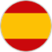
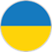

В зависимости от потребностей пользователей в Creatio можно менять язык интерфейса системы. Список доступных языков интерфейса находится в разделе Языки дизайнера системы.
Интерфейс системы переведен на следующие языки:
|
Английский (США) |
Португальский (Бразилия) |
|
Арабский (Саудовская Аравия) |
Румынский (Румыния) |
|
Голландский (Нидерланды) |
Русский (Россия) |
|
Иврит (Израиль) |
|
|
 Испанский (Испания) |
 Украинский (Украина) |
|
Итальянский (Италия) |
Французский (Франция) |
|
Немецкий (Германия) |
Чешский (Чешская республика) |
|
Персидский (Иран) |
Шведский (Швеция) |
|
Польский (Польша) |
|

При необходимости вы можете добавить другие языки и локализовать Creatio с помощью простых и удобных инструментов для перевода. Перевод осуществляется в разделе Переводы.
Активировать язык интерфейса
В профиле пользователя по умолчанию доступен только один язык. Чтобы добавить в список остальные локализации, их необходимо активировать в разделе Языки.
-
Из дизайнера системы перейдите в раздел Языки.
-
Выберите необходимый язык из списка и нажмите на кнопку Открыть.
-
Установите признак Активен на странице языка (Рис. 1).
-
Сохраните изменения.
В результате Creatio начнет автоматическую компиляцию, после которой активированный язык появится в профилях пользователей системы.
Изменить язык интерфейса
Изменить язык интерфейса можно в профиле пользователя. Язык интерфейса определяется индивидуально для каждого пользователя.
-
Войдите в профиль, например, нажав на фотографию пользователя, расположенную в правом верхнем углу окна приложения, и выбрав пункт Ваш профиль.
-
На странице профиля выберите нужный язык из списка и сохраните изменения (Рис. 1).
После смены языка интерфейса в профиле пользователя необходимо повторно зайти в систему.
Интерфейс системы, а также все разделы и объекты, включая аналитику и значения справочников, отобразятся на языке, указанном в профиле пользователя. Данные, которые содержатся в системе, например, названия компаний и имена контактных лиц, текстовые комментарии и т.д. будут отображаться на исходном языке.
Настроить язык интерфейса по умолчанию
При регистрации нового пользователя администратор должен указать на странице пользователя (раздел Пользователи системы) язык интерфейса (культуру), который будет установлен для этого пользователя по умолчанию. Вы можете задать язык интерфейса по умолчанию для всех пользователей. Это удобно, например, если вы добавляете сразу большое количество пользователей, импортируя их список в систему.
Для установки языка системы по умолчанию:
-
Из дизайнера системы перейдите в раздел Языки.
-
Выберите язык, который необходимо установить по умолчанию и нажмите кнопку Открыть.
-
На открывшейся странице установите признак Использовать по умолчанию (Рис. 1).
-
Сохраните изменения.
Теперь при создании нового пользователя в его профиле автоматически будет указан язык, для которого установлен признак Использовать по умолчанию.
При необходимости пользователь может изменить язык интерфейса в своем профиле. После изменения языка, авторизовавшись в системе, пользователь будет видеть интерфейс и данные системы на выбранном языке.
Добавить новый язык интерфейса в систему
При локализации конфигураций Creatio на новые языки необходимо сначала добавить соответствующие записи в раздел Языки.
-
Из дизайнера системы перейдите в раздел Языки.
-
Нажмите на кнопку Добавить язык. Откроется страница новой записи.
-
В поле Название выберите из списка язык, который необходимо добавить.
-
Добавьте изображение, характеризующее язык, который вы добавляете, например, флаг или герб.
-
Сохраните изменения.